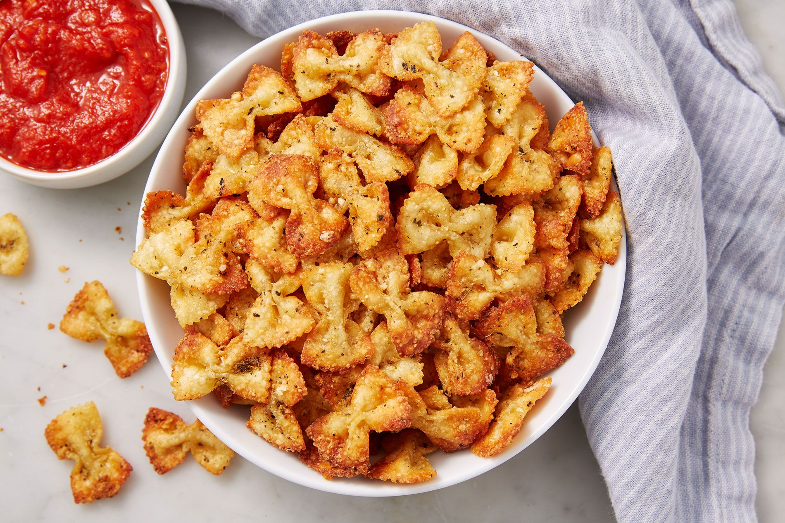

Pasta Chips

Description
Everyone loves pasta. And everyone loves chips. So obviously, combining the two is a great idea. These fried bowtie pasta noodles are surprisingly addictive and snackable. Pair them with the dips and toppings of your choice. Go nuts - toss them with parmesan cheese and serve with marinara, or top with taco seasoning and enjoy with guacamole. The possibilities are limitless.
Ingredients
- 1 pound bowtie pasta
- Vegetable oil, for frying
- 1/2 cup freshly grated parmesan
- 1 teaspoon Italian seasoning
- 1 teaspoon garlic powder
- Kosher salt
- Freshly ground black pepper
- Marinara, for serving
Steps
- In a large pot of salted boiling water, cook pasta until al dente, about 8 minutes. Drain pasta.
- In a large, deep skillet, pour about ½” vegetable oil and heat over medium heat. When oil is shimmering, add about 1 cup al dente pasta in a single layer. Cook until golden and crispy, about 2 minutes per side. Drain on paper towels, then season immediately with Parmesan, Italian seasoning, garlic powder, salt and, pepper.
- Repeat, working in batches, with the rest of the pasta.
- Serve with warm marinara.
Recipe and image courtesy of Delish.com